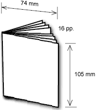

CAPTION 2002
Minicomics are great fun to make. They are also a good thing to take to conventions—people who are nervous about buying a full-sized zine will happily pick up a mini.
Sixteen pages, A7. You can do this the the simple way or the clever way. This uses a single double-sided A4 copy to make a mini with sixteen pages.

If you like you can trim it a little more to make credit-card sized (officially 85·60 mm × 53·98 mm).